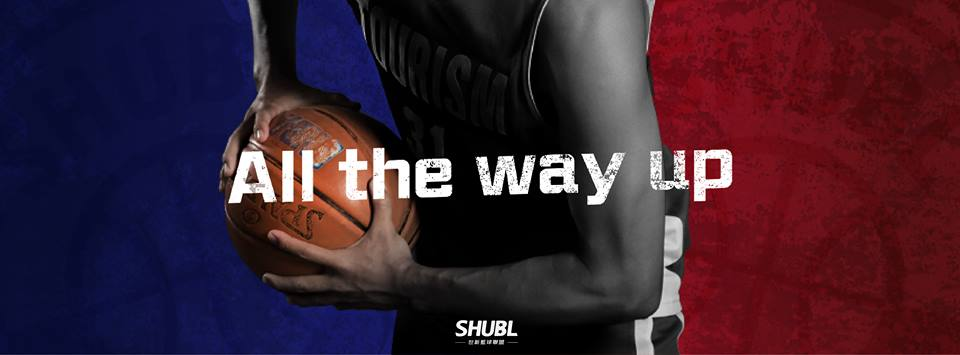

財經系
財金【近在咫尺】 去年曾拿下系際盃第三名的財金，經過比賽的洗禮，相信他們實力更加堅強，之前的球賽距離優勝都只有一步之遙，希望這次的比賽能拿下睽違已久的冠軍寶座。

傳管系
傳管:再出發 今年在陣容上少了一個當家後衛，不過對整體戰力並無太大的影響；歷年球風以快速的轉換快攻和令人窒息的圈場壓迫防守，把對手打得措手不及。只是去年戰績不如以往理想，今年重新出發，期許隊伍能重返那世新籃球霸主的王位。

公廣系
公廣：連霸之路 去年拿下睽違已久的系際盃以及第一屆世新籃球聯盟的冠軍，今年公廣系藍從球員到教練的唯一目標就是「邁向二連霸」，陣容上沒有太大的改變的他們，到底今年可以帶著他們快、狠、準的球風走到哪呢？

觀光系
觀光：陷入重建 觀光有著去年分組冠軍的光環，在大四主力畢業之後，是否還能保持亮眼成績，是這一季觀光需要面對的難題，但經過一年，後進也更加成長，大一更是有乙組全國8強體保生的即戰力，今年觀光能走多遠？能不能打破大家的預期呢？
廣電系
廣電：翠谷壞孩子 一直以來，強壯、硬漢的打法就是廣電的招牌，絢麗快速的進攻，堅強的防守，遇強則強，遇弱則捻壓，一直都是廣電能進4強的重點，在新的一年隊上主力尚未畢業，後進愈加成熟，這群壞孩子是否能再次衝擊冠軍，讓人拭目以待！
經濟系
經濟：揮別過去 一直以來喜愛禁區肉搏戰的經濟系，去年時常遇到「進攻當機」的窘境，使得經濟系在第一屆世新籃球聯盟戰績不盡理想，今年，他們能否捲土重來，刮出令人聞風喪膽的經濟炫風？
口傳系
口傳:最後的一口氣 今年陣容的陣容和去年相比並未太大不同，上屆主力群尚未畢業。球風以陣地戰為主，可惜去年成績不是很理想，在經過一年的磨練，球員成熟度有所提升；今年他們捲土重來，渴望用盡全力搶下每場勝利。
轉聯系
轉聯：初試啼聲 首次加入聯盟的轉聯，球員以各系轉學生為基礎，由來自各系的籃球好手共同組成，可謂是聯盟的八國聯軍。這次首度參加，期許他們可以發揮一加一大於二的效果，讓各隊知道他們可是不好惹的。
About us

SHUBL
世新籃球聯盟
這是一個由「世新學生」自主舉辦的籃球聯盟賽 由 「公廣、傳管、廣電、口傳、圖傳、新聞、觀光、經濟 、財金、社心、企管、轉聯、英語、法律」十四系領軍出賽